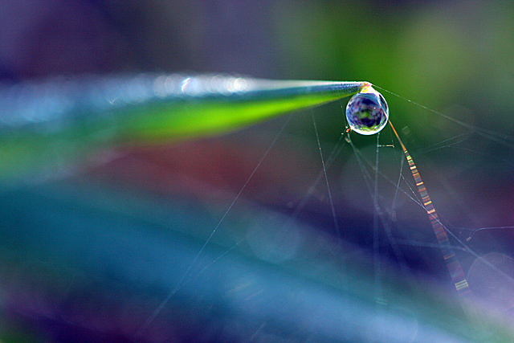
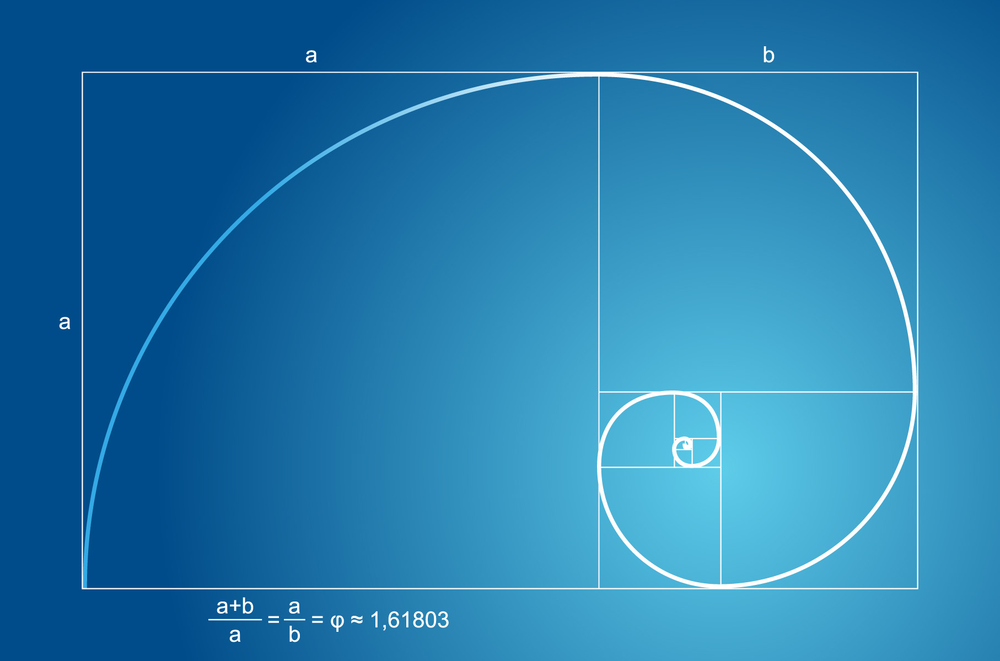
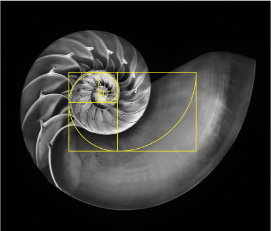

Interpretation of the Universe through Numbers
The laws of nature are but the mathematical thoughts of God. —Euclid
Geometry or algebra, shapes or numbers, axioms or numerical calculations? Which one is more applicable to the possible interpretation of the universe? After all, can we really use numbers and/or geometry to decipher the mysterious patterns behind the universe? Before I proceed further, allow me to introduce the following concepts:
- Mathematics is the language of nature.
- Everything around us can be represented and understood through numbers.
- If you graph the numbers of any system, patterns emerge. Therefore, there are patterns everywhere in nature. Evidence: sun spot cycles, the wax and wane of caribou populations, the cycling of disease epidemics, and the rise and fall of the Nile.
These are the concepts uttered by Max Cohen, the protagonist of the movie Pi (π). Directed by Darren Aronofsky, Pi tells a story of a genius mathematician who set out on a quest to find patterns in the number π. These patterns, as Max believes, would help us answer questions about the creation of the universe, as well as the symbolic meanings of various patterns in nature. Due to this quest, Max has completely isolated himself from the rest of his community, his family and neighbors. The only people he has any contact with are his ex-professor—the fatherly figure for Max—with whom Max shares everything about his research; then there is Max’s neighbor, who genuinely cares about his well-being, partly because she is attracted to him, partly due to Max’s strange and paranoid behavior; and finally, we have a little girl (another one of Max’s neighbors) who, aware of Max’s expertise in mathematics, enjoys in testing his intelligence by asking him to solve very complex algebraic assignments: things such as 322x491, or 73/22. Max, of course, always manages to impress the girl, but also the movie audience, by solving these assignments—in the span of a few seconds only—without the use of calculator. Max’s obsessive quest for patterns in π does not go as smoothly as he expected. Namely, he is being chased by two different groups of people, who wish to intercept his research and convince him to disclose the results. On the one hand, we have a group of highly influential bankers who are convinced that Max’s results could offer them a pattern for the stock market. This way, they would be able to control and manipulate the rise and the fall of stocks on a global level. On the other hand, we are presented with the members of a Jewish, Kabbalistic order, who believe that Max’s research is the key to solving patterns in the Torah and the True Name of God (216 letters long, as we are told by one of the members of the order). While Max refuses to help the bankers in their goal to further generate capitalism and the crash of the stock market, he does become interested in helping out the Jewish order, mainly because he becomes very intrigued by the relationship between numbers and letters in the Torah. Towards the end of the movie, Max comes to a realization that the road to God is to be achieved not through some pattern of 216 numbers, but through the conception of beauty and simplicity of our existence in the world, i.e. through a simultaneous acceptance of all the knowledge and lack of knowledge of that which resides in the terrestrial and celestial spheres. As Max says to the Jewish rabbi in the movie: “It’s just a number. The number is nothing. It’s the meaning, the syntax: it’s what’s between the numbers. You haven’t understood.”
In the ancient Greece, Pythagoras and his followers held a belief that the universe itself is a harmonious and ordered entity, which is to be interpreted and understood through numbers and numerical patterns. The general belief was that literally everything, from the structure of humans, animals and plants, to the movement of the planets and the emergence of various natural occurrences, can be expressed through numbers. Interestingly, the Pythagoreans would also use mathematical relations to analyze and explain musical relations and harmonics. As suggested by Sextus Empiricus in his Adversus Mathematicos, Book VII, known also under the title Against the Logicians, Pythagoras and his followers placed great importance on the tetraktys (any coordinated set of four items) and the number 10: “…by tetraktys they mean a number which, being constituted out of the first four numbers, fits together the most perfect number, as for instance ten: for one and two and three and four becomes ten. This number is the first tetraktys, and is described as the fount of ever-flowing nature” (Sextus Empiricus, Book VII, p. 94). In Metaphysics, Aristotle reaffirms the importance of the number ten for the Pythagoreans and Greek mathematics. As he writes: “…since the number 10 seems to be perfect and to embrace the whole nature of the numbers, they say that the things that travel through the heaven are ten; but since those that are visible are only nine, they therefore make a tenth, the ‘counter-earth’…” (Aristotle). Number ten plays a great importance in many cultural and religious traditions around the world. The Bible, for instance, speaks of the ten plagues of Egypt, the ten commandments given to Moses, the ten generations of antediluvian age, the ten trials of Abraham’s faith, and many other instances. In Hinduism, the number of Vishnu’s incarnations or avatars is ten, but 10 is also the number that symbolizes the unity of Brahma and Atman, i.e. the coming together of both the immortal and mortal, or the celestial and terrestrial aspects in the world. It is also worth noting that the number of sephirot, one of the most relevant concepts in the Kabbalah, is ten. As Kabbalistic teachings suggest, the Sephirot are the emanations or manifestations through which God reveals himself, all of them symbolizing a different spiritual quality or aspect. In addition to the frequency and importance of the number 10 in different religions, we could say that its presence on a global level is quite overwhelming. Is it not interesting that 10 is the primary number used for marking the passage of time? All of the major periods we use to track time start with the number 10: decade (10), century (100), millennium (1000). We should also consider the binary numbers (numbers made up of only 0s and 1s) which, understandably so, contain the number 10 in itself! Or the simple fact that humans tend to count, regularly, on their ten fingers!

The Presence of the Number Pi (π) in the World of Nature
Going back to the number π, it is fascinating to what extent this number appears in the natural world. Scientists and mathematicians have shown that π, which, by the way, is an irrational number (since it goes on infinitely, and we can never predict the digit that comes next in the succession of an endless stream of numbers), is everywhere around us: first and foremost, in circles which are the natural occurrence in nature (e.g. the pupil of the eye, the disk of the Sun and the planets in the solar system, the rain drops, the snail’s shell, flowers, whirlpools, etc); but, it also “emerges in the shapes of rivers…. Rivers that flow straight from source to mouth have small meandering ratios, while ones that lollygag along the way have high ones. Turns out, the average meandering ratio of rivers approaches is equal to the number π” (Livescience: What Makes Pi So Special?). For more than 3000 years, π has puzzled numerous generations of mathematicians, who admired the subtle mystery of its patterns. Unlike most of modern sciences, which place their focus mainly on quantity, constant change and insistent progress, the mathematicians of ancient Greece saw mathematics and all other exact sciences in a metaphysical way. For Pythagoras and Euclid, for instance, mathematics was a means to understanding the microcosmos of soul and intellect, but it also served as a method to explain the position of humans in relation to God and His creations; in other words, it paved the way for the attainment of sacred knowledge. One of the major mistakes of modern science was the separation of mathematics and physics from philosophy and psychology (psychology, for example, was never treated as a separate discipline, let alone science, until the emergence of the Scientific Revolution in the 17th century). Famous Greek, Roman, Byzantine, and Islamic scholars all treated mathematics and psychology as a part of philosophy, and philosophy itself as integral to mathematics and physics. As expounded by René Guénon (French mathematician and philosopher) in The Crisis of the Modern World, “psychology as it is understood today—that is, the study of mental phenomena as such—is a natural product of Anglo-Saxon empiricism and of the eighteenth century mentality, and that the point of view to which it corresponds was so negligible for the ancient world that, even if it was sometimes taken incidentally into consideration, no one would have dreamed of making a special science of it, since anything of value that it might contain was transformed and assimilated in higher points of view. In quite a different field, one could show also that modern mathematics represents no more than the outer crust or ‘exoteric’ side of Pythagorean mathematics; the ancient idea of numbers has indeed become quite unintelligible to the moderns, because, here too, the higher portion of the science, which gave it its traditional character and therewith a truly intellectual value, has completely disappeared—a case that is very similar to that of astrology” (p. 50).
When we speak of mathematics as the only viable language of nature, the following question arises: What kind of mathematics? Are nature and its phenomena meant to be interpreted through algebra (numbers), or through geometry (various geometric shapes), or perhaps through a combination of both? While watching the movie Pi, I couldn’t help but wonder whether Max Cohen’s reason for his failure in finding the patterns in π was due to his excessive reliance on numbers. What if the universe and our relationship to it is to be interpreted through geometry, not numbers? Max, however, does not undermine the importance of geometry, despite his seeming obsession with numbers and the numerical patterns in π. He even names his computer Euclid (author of The Elements of Geometry, known as the father of geometry and geometric algebra), and relates to the ever-fascinating Pythagoras’ pentagram and the golden rectangle, which result in the Golden Ratio. In his famous painting “The Vitruvian Man”, Leonardo Da Vinci used Pythagoras’ golden rectangle and the pentagram to illustrate the perfect human body. Likewise, Salvador Dali, in his painting “The Sacrament of the Last Supper”, used the golden rectangle, as exhibited in the dimensions of the canvas. When we connect a curve through the concentric golden rectangles (both the small and the large rectangle), we get a golden spiral, or the Golden Ratio. This same spiral appears everywhere in nature! Pythagoras noted that the Golden Ratio or the mythical shape of a spiral is always present in the flower heads, the Milky Way and many other galaxies, the snail or nautilus shells, tornadoes and whirlpools, ram’s horns, even our fingerprints! To get a better understanding of what Pythagoras meant by this, take a look at the images below:

The golden spiral inside the golden rectangle: As shown on the image, the value Phi or the Golden Ratio is 1.61803…

The nautilus shell displaying the presence of the golden spiral in nature.
As fascinating and mind-boggling as this is, I also find it fascinating how proportional and harmonious objects and the living things in the natural world tend to be. By now, many of you have probably noticed the seemingly perfect and equal shapes of snowflakes, or the equal shape and size of petals on a flower, but also the intricately shaped parts on a pine cone and a cauliflower, or the proportional lines on a leaf. Also, have you ever paid attention to all of the details and different patterns/motifs on a bird? Take eagles, doves, or blue jays, for example: one can notice all sorts of shapes on their backs and wings, all equal in size. These shapes range from triangles, circles and ellipses, to oval and conical shapes. Note that when birds fly together, they very often form a flock that resembles a triangle. Speaking of other animals, it is very common for all domestic cats to have a pointy pattern shaped like a semi-triangle, each right above their eyes (both patterns are equal in size) and between the sides of the upper part of the nose. These patterns cannot be so easily discerned in white and black cats, though. These are just some of the examples that point to the constant presence of geometry, and mathematics in general, in our everyday lives and surroundings. Why do we come across all these fascinating instances of perfect geometric shapes in nature? What is the purpose that these shapes exhibit in the natural world: what are they supposed to remind us of? In line with the teachings of Euclid and other Greek mathematicians, I choose to believe that all of the geometric shapes and numerical patterns in nature are here to remind us of the divine harmony and order on a macrocosmic level. More importantly, geometrical shapes and patterns in nature also exemplify the perfection and unity of divine creations, as opposed to the human attempts to mimic that perfection and soar beyond the beauty and harmony of the natural world. Therefore, everything around us is not necessarily represented and understood through quantity and numbers, as Max Cohen from the movie Pi believes; rather, everything around us can be represented and understood through geometry. Perhaps geometry and its patterns, not numbers, are the true language of nature. In any case, the possibilities are infinite!